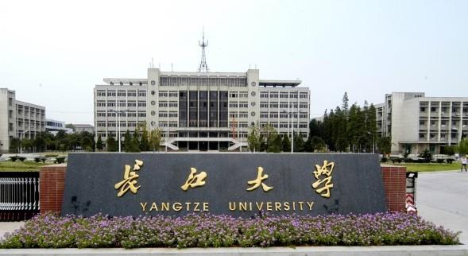

长江大学是2003年4月经国家教育部批准，由原江汉石油学院、湖北农学院、荆州师范学院、湖北省卫生职工医学院合并组建而成，是湖北省属高校中规模最大、学科门类较全的综合性大学，为湖北省重点建设的骨干高校，是国家“中西部高校基础能力建设工程”入选高校，也是湖北省人民政府与中国石油天然气集团公司、中国石油化工集团公司、中国海洋石油总公司共建和湖北省人民政府与国家农业部共建的高校。
学校位于长江中游的历史文化名城—-荆州市，并在武汉市建有教学科研基地。荆州有着悠久的历史和灿烂的文化，是楚文化的发祥地和三国文化的集中地；是春秋时期楚国的都城、伟大爱国诗人屈原的故里，历来为兵家必争之地。这里东衔九省通衢的武汉三镇，西临举世瞩目的长江三峡，南傍浩淼无垠的洞庭湖畔，北垂雄奇险秀的武当山脉。校园环境秀丽，景色宜人，为湖北省园林式高等学校。
学校坚持开放办学，是全国产学研合作教育示范单位，湖北省石油学科研究生创新基地，与国内40家石油企业和82个县级以上政府、地方企业建立了校企（地）合作关系，学校先后与美国、英国、韩国、日本、俄罗斯、阿塞拜疆、新加坡、埃及、越南、澳大利亚等国家近50所院校机构建立了协作关系，开展合作交流和专家学者互访；向美国、英国、韩国、日本、马来西亚、俄罗斯等国家选派留学生；同时在美国、加拿大、韩国、越南、巴基斯坦、约旦、尼泊尔、加纳等15个国家招收有来华留学生。
“雄关漫道真如铁，而今迈步从头越”，站在新的历史起点上，长江大学师生以只争朝夕、敢为人先的精神，努力践行“长大长新”校训，积极营造“求实、进取、创业、报国”优良校风，抢抓机遇、加快发展，力争在学校组建20周年前后建成优势突出、特色鲜明的高水平综合性大学。
地 址： 湖北省荆州市南环路1号
电 话： 0716-8060550 0716-8060813(传真)
咨询电话： 0716-8060550
邮 编： 434023
网 址： http://www.yangtzeu.edu.cn/